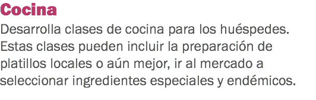
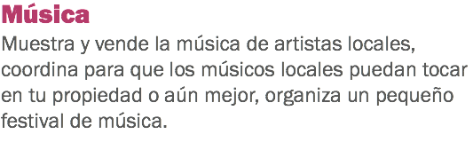
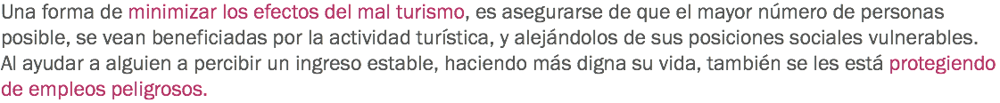

Lograr una conciencia de la sostenibilidad

Los cuatro aspectos del turismo sostenible


![Monitorear las facturas de energía (electricidad, gas, combustibles) en una base mensual/semanal.
Monitorear tus costos como porcentaje de ingresos y desglosar el consumo de energía para cada una de las divisiones operacionales del hotel. Revisar que el equipo de uso intensivo de energía y los electrodomésticos (aires acondicionados, lavadoras de ropa, luces, computadoras) estén funcionando eficientemente. Prestar atención a las actitudes y prácticas del personal.
Mejorar el medio ambiente físico.](images/u649-13.png)





x


![El valor histórico de tu destino es muy importante, debes protegerlo para preservar el carácter que lo vuelve único y distinto a los demás destinos. Con el rápido desarrollo que se ha llevado a cabo durante las últimas décadas, se dice que algunas ciudades se volvieron más “occidentales”, homogeneizándose. Para los visitantes, lo anterior carece de valor, ya que las ciudades se convierten en algo que ellos ven en sus casas, en algo ordinario. Al abrazar el pasado y resaltar las diferencias históricas, los negocios pueden ser diferenciados por sí mismos y pueden convertir la experiencia deseada del visitante en una experiencia de convivir y adentrarse a culturas diferentes. Muchos turistas de occidente han visto cómo los bienes fueron elaborados antes que las maquinarias. Muchas viejas prácticas tales como el hilado tradicional de seda, tienen un excelente valor turístico. Hay muchas otras actividades que puedes diseñar para atraer a los turistas.](images/u730-28.png)




![Tú puedes hacer esto al hacer un esfuerzo por contratar personal local y apoyar a los negocios locales que comparten contigo el interés por generar un negocio sostenible. No necesariamente tienes que involucrar a los miembros de tu comunidad en tu negocio. Si a ellos se les enseña y se les genera un rol en la creación de una experiencia turística valiosa, indirectamente se beneficiarán de tu negocio. Debes enfocarte en la importancia de mejorar el medio ambiente social porque a la larga, éste proporcionará los cimientos para las actividades turísticas atractivas en las cuales se basará tu negocio. Al hacer un esfuerzo por atraer a turistas que respetan a las personas y la cultura en tu área, podrás contribuir al fortalecimiento de la dignidad y prosperidad de tu pueblo.](images/u904-27.png)
x

![Así como hay muchas formas de turismo que pueden mejorar la sociedad, hay otras formas que la pueden dañar. Como todos sabemos hay turistas buenos y hay turistas malos, y todos nosotros queremos atraer a los turistas buenos. Una de las formas en que podemos asegurarnos de atraer buenos turistas es minimizando aquellas actividades en las que los turistas malos se involucran. Esto puede ser logrado de forma explícita al prohibir las actividades negativas en tu hotel, tales como la prostitución, apuestas y el uso de drogas. Si un huésped expresa su interés en participar en algún tipo de estas actividades, es tu responsabilidad explicarle con mucho tacto que no pueden ser admitidos en el hotel.](images/u735-22.png)
Haz clic en Regresar para volver al inicio.